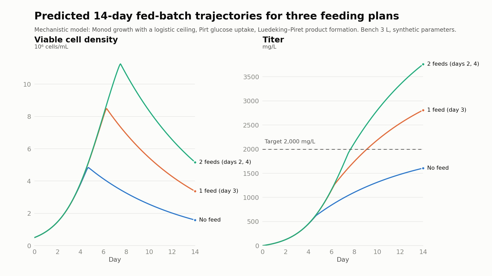

CGT Fed-Batch Feeding Advisor
Independent project, Fall 2026

Process scientists running fed-batch cell culture (CHO or HEK293) usually find out whether a feeding strategy works by running it, which costs weeks of bioreactor time. I built a decision-support tool that answers the question first, on paper: enter a feeding plan and starting conditions, and it returns the predicted viable cell density and titer over the run, an uncertainty band, and a clear pass/fail against the target titer.
At its core is a mechanistic model of three coupled quantities (viable cell density, glucose and product titer), solved as a system of ordinary differential equations. Each feed is a sudden jump in glucose rather than a smooth change, so the simulation is split at every feed, integrated piece by piece, and the glucose is added between pieces.
On a bench-scale 3 L, 14-day run, two feeds are predicted to raise final titer from 1.6 g/L to 3.8 g/L. With no feeds the run misses a 2 g/L target; both fed plans clear it.
Approach
- Growth: Monod kinetics on glucose, a logistic term that caps cell density, and first-order cell death. Every parameter is documented as either taken from published ranges or deliberately chosen.
- Glucose uptake: the Pirt model, combining glucose used to make new cells with a maintenance cost that every living cell pays.
- Product: Luedeking–Piret, with the growth-linked term tied to new cell growth rather than the net change in cell number, so dying cells can never remove product that has already been secreted.
- Dashboard: a Streamlit app that shows the verdict first, then the titer and cell density charts.
- Testing: pytest checks on physical behaviour (titer never falls, feed order doesn't matter, cell density stays below its ceiling) and a headless dashboard test, all run in Docker by GitHub Actions on every push.
What I learned
- A model that runs isn't necessarily right. My first working version predicted 270 million cells/mL for a heavy feeding plan, more than ten times what a real culture reaches, because glucose was the only thing that could limit growth. Adding a maintenance cost only scaled the numbers down; a carrying-capacity ceiling was what fixed it.
- Check results against a hand calculation. Once, every culture starved within an hour. Working out the expected numbers by hand matched the output exactly, which traced the problem to a unit conversion that made one coefficient about 1,000 times too large.
- Containers aren't reproducible unless every dependency is pinned. An unpinned library that Streamlit relies on updated itself and broke the charts. The new dashboard test caught it.
Next
Generate synthetic “ground truth” runs that include effects the model leaves out, such as cells declining late in a run even when fed. Then train a hybrid correction term on the gap between that data and the model, replacing the fixed ±15% band with uncertainty learned from data.